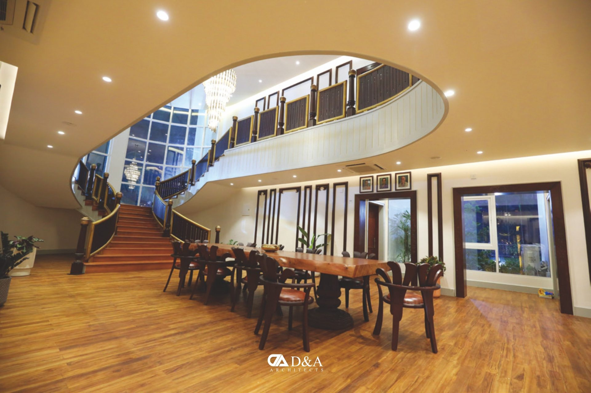

The Raghupathi Bhat Villa
A 9,000 sq ft villa in Manipal inspired by the International style.
The Raghupathi Bhat Villa in Manipal blends South Indian tradition with Brahmanic design principles. It follows the modernist ideas seen in Le Corbusier's Villa Savoye.
- Type
- Villa
- Location
- Manipal
- Size
- 9,000 sq ft

Modern ideas, set out plainly.
Horizontal windows, a rooftop garden, pilotis, a free facade and an open floor plan define the design.

A staircase worth walking.
A sweeping timber staircase curves above the dining hall, and a night-lit pool runs along the upper floor.
All projects